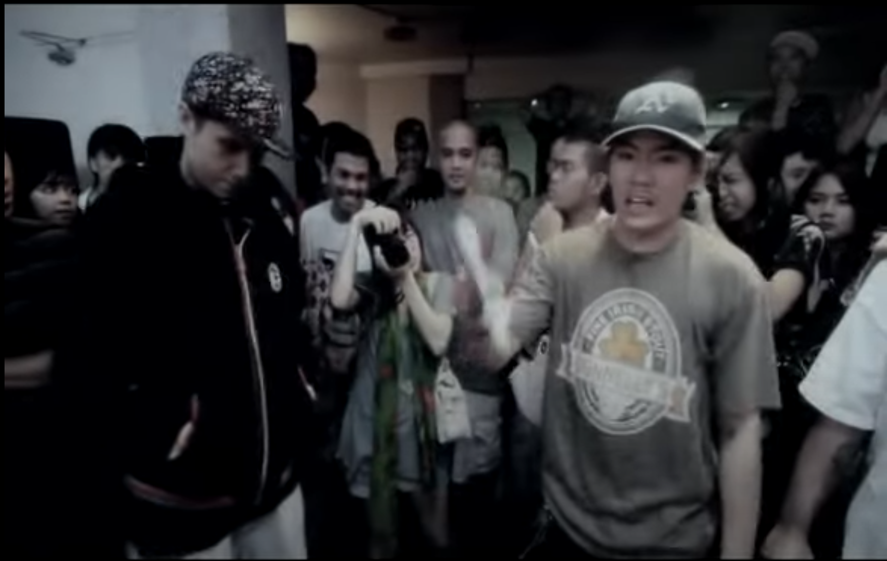
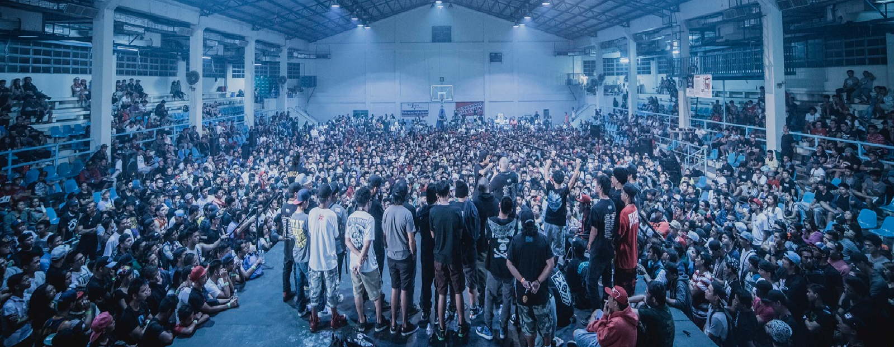

How It All Started
FlipTop was founded in 2010 by Alaric Riam Yuson, also known as "Anygma." Inspired by the growing global culture of rap battles, Yuson sought to create a platform for Filipino emcees to showcase their talents.
The Rise of FlipTop
From humble beginnings in small venues, FlipTop quickly rose to prominence, drawing massive audiences online and in live events. Its YouTube channel now boasts millions of subscribers and billions of views, making it one of the most successful battle rap leagues in the world.
Key Milestones
- 2010: First FlipTop Battle held in Makati, Philippines.
- 2012: FlipTop gained mainstream recognition and widespread media coverage.
- 2015: Expansion to include regional divisions, such as Metro Manila, Visayas, and Mindanao.
- 2020: Celebrated its 10th anniversary with a special event.